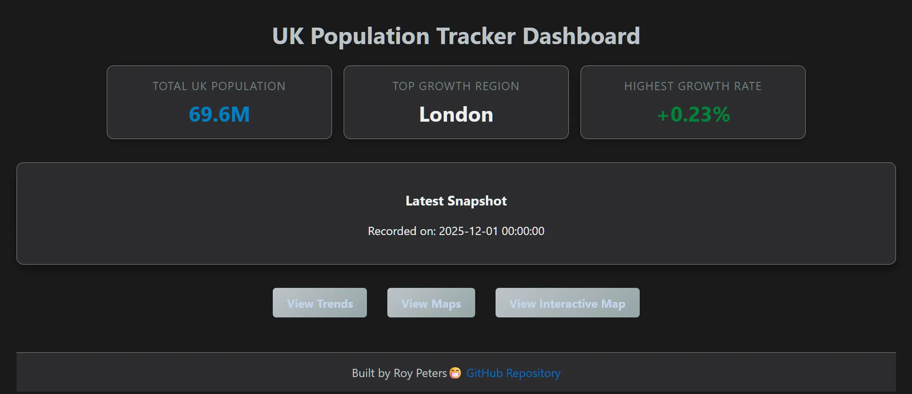
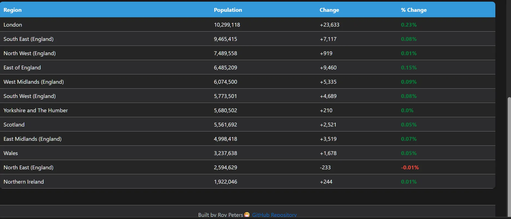
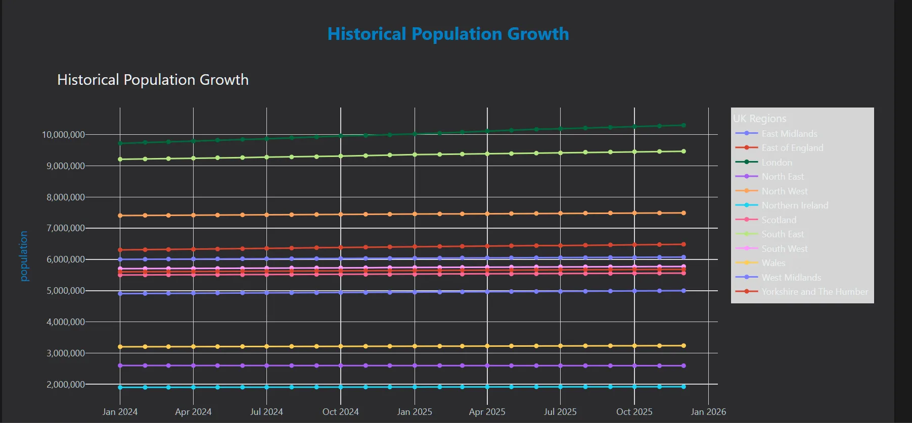
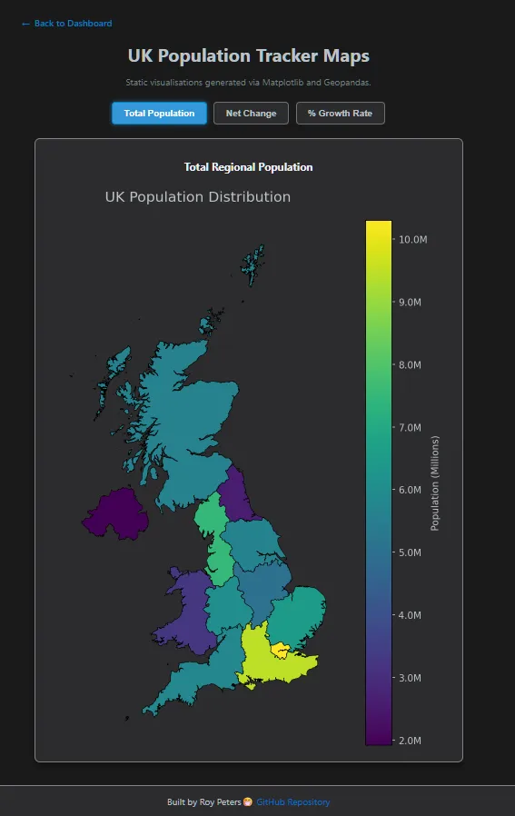
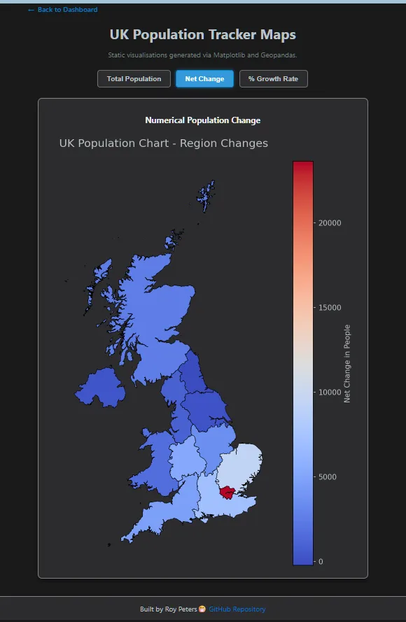
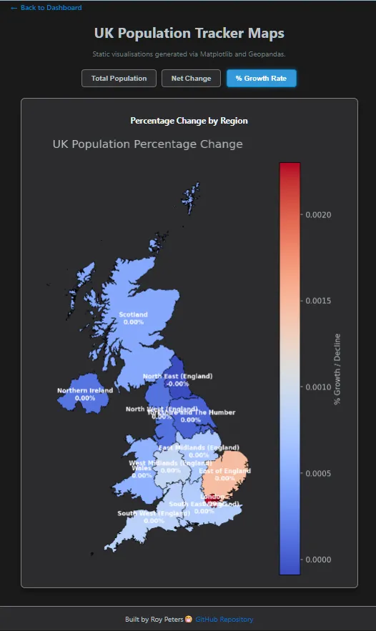
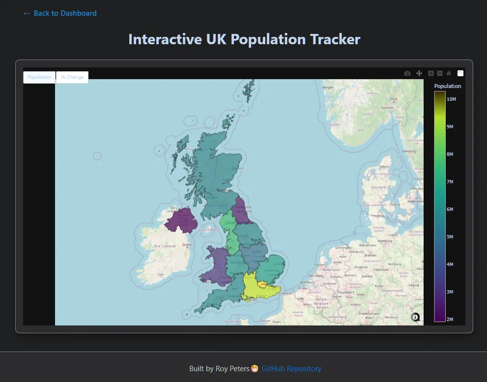
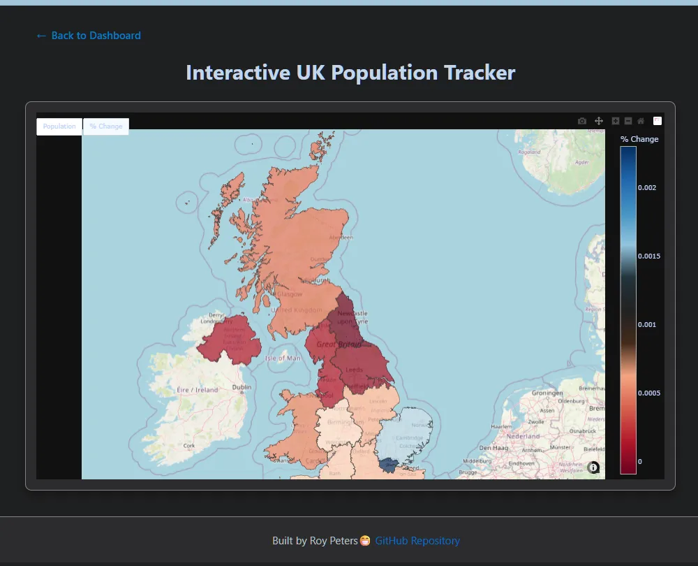

UK Population Tracker
- An end-to-end data engineering and visualization platform that transforms raw UK population data into actionable geographic insights.


🚀 Features
Full-Stack Pipeline: Built a complete data flow using Python to process ONS data and MongoDB for persistent storage.
Geospatial Intelligence: Integrated Geopandas and Matplotlib to generate high-fidelity choropleth maps with custom silver-on-charcoal styling.
Interactive Analytics: Developed a dynamic dashboard using Flask and Plotly, allowing users to toggle between population totals, net changes, and percentage shifts.
Responsive UI: Crafted a sleek "Dark Mode" interface featuring Hero Stat Cards that provide an instant narrative of the UK's top-performing regions.
📸 Gallery & Interface
Below are snapshots of the application in action, highlighting the Dark/Silver aesthetic and the interactive data layers.
1. Main Dashboard
Overview of the Stat cards and latest population snapshots.

2. Population Trends
Interactive bar charts showing percentage change across the 12 UK regions.


3. Geospatial Analytics
Interactive choropleth maps generated via Geopandas and Plotly.





🎥 Project Demo
See the Interactive UK Population Tracker in action. This video demonstrates the seamless navigation between the dashboard, regional trends, and the interactive Plotly maps.
Note: If the video does not load, you can find the raw file here.
⚙️ Installation & Setup
Follow these steps to get the environment running locally using Git Bash:
1. Clone the Repository
git clone [https://github.com/reory/uk-population-tracker.git](https://github.com/reory/uk-population-tracker.git)
cd uk-population-tracker
2. Set Up a Virtual Environment
python -m venv venv
source venv/Scripts/activate
3. Data Dependencies
- GeoPackage (.gpkg): The boundary data for UK regions is located in the
/datafolder. - The application uses
pyogrioandgeopandasto interface with this file automatically. - Ensure the file
uk_regions.gpkgremains in the/datadirectory for the map engine to function.
4. Install Dependencies
pip install -r requirements.txt
5. Data Initialization (Faker & Mimesis)
Run the ingestion script to generate the synthetic dataset, inject noise, and populate your MongoDB instance:
python -m processing.mongo_client
6. Generate Visual Assets
Pre-render the static maps before launching the dashboard:
python -m processing.map_regions
7. Run the Application
python run.py
The Flask dashboard will be live at http://127.0.0.1:5000/
🧪 Testing
This project uses pytest and mongomock.
To run the full suite:
pytest
To skip live database checks:
pytest -m "not live"
🛠️ Tech Stack & Data Engineering
Backend: Python 3.x, Flask (Web Framework)
Database: MongoDB (Atlas/Community)
Synthetic Data Generation: Faker: Used to generate a baseline of realistic regional entities and metadata.
Mimesis: Leveraged for high-performance generation of large-scale population sets.
Data Augmentation: Applied custom Noise Injection algorithms to baseline data to simulate realistic percentage changes and growth fluctuations over a multi-year timeline.
Data Analysis: Polars & Pandas
Geospatial: Geopandas, Shapely
Frontend: HTML5, CSS3, Plotly.js
📊 Key Features
Latest Snapshot: Real-time retrieval of the most recent database entry.
Multi-View Maps: Static regional analysis with formatted "Millions" labels for report-ready exports.
Interactive Drill-Down: Hover-enabled Plotly maps for granular data exploration.
Automated Pipeline: Custom processing modules that handle data cleaning and map generation in one command.
🗺️ V2 Roadmap (The Drill-Down)
The next phase of the project focuses on Granular Urban Analytics:
City Drill-Downs: Users will be able to click on a region (starting with London) to explore a new layer of data.
Borough-Level Mapping: Integration of ONS Local Authority District (LAD) GeoPackages to map the 32 London Boroughs.
Urban Comparison: Expanding the drill-down feature to other major UK cities like Manchester, Birmingham, and Leeds.
Predictive Modeling: Using historical trends to forecast population growth over the next 5 years.
Use prophet along with pandas for high quality forecasting for data.
📝 Notes
- Data Privacy: All data used in this demonstration is synthetically generated via Faker and Mimesis. No real ONS individual records were accessed or stored.
- Performance: By utilizing Polars for the initial data joins and aggregation, the pipeline is capable of handling millions of rows while maintaining a sub-second response time for the dashboard.
- Compatibility: Designed for modern browsers. Best viewed in Chrome or Edge for full Plotly interactivity.
🙏 Acknowledgments
- The ONS Open Geography Portal for providing the boundary GeoJSON/GeoPackage files.
- The Open Source Community for the incredible tools (Flask, Polars, MongoDB) that make projects like this possible.
- Showcase Viewers: Thank you for taking the time to explore this project! Feedback is always welcome.
Built by Roy Peters contact details 😁